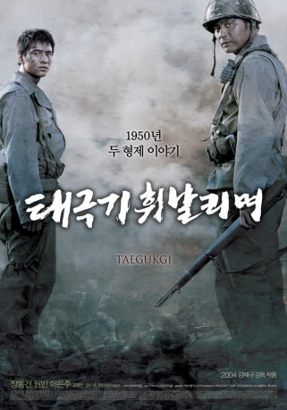

#3871 Brotherhood
Alternativ: Tae Guk Gi: The Brotherhood of War (Englischer Titel)
 
 IMDB-Wertung: 8.1 / 10
IMDB-Wertung: 8.1 / 10  Metascore: 0
Metascore: 0 
Die Brüder Jin-Tae und Jin-Seok werden bei Ausbruch des Koreakrieges 1950 von der südkoreanischen Regierung eingezogen und müssen Familie und Habseligkeiten zurücklassen. Jin-Tae, der selbst die Schule abgebrochen hat und ein eher rauher Bursche ist, versucht seinen zartbesaiteten Bruder vor den Gefahren des Krieges zu schützen, indem er sich stets vor ihn stellt. Hierzu nimmt Jin-Tae oftmals gefährliche Missionen an und zeigt dabei, dass er durchaus eine gewisse Begabung für den Krieg hat. Seine Beliebtheit unter den anderen Soldaten nimmt stetig zu, jedoch verändert sich seine Person zunehmend. Jin-Seok stellt sich immer mehr die Frage, ob sein Bruder wirklich für ihn und seine Familie kämpft oder aus eigennützigem Medaillenehrgeiz.
Jahr: 2004
Dauer: 148 Minuten
FSK: 16
Land: Süd-Korea Studio: 3L FilmverleihTonspuren:
Untertitel: Deutsch,
Auflösung: 1080p (1920x816) Größe: 10444 MB
Genre: Action, Drama, Krieg
Regisseur: Je-kyu Kang
Drehbuch: Timothy Mannion
Soundtrack:
Darsteller:
- Dong-gun Jang als Jin-tae Lee
- Bin Won als Jin-seok Lee
 Min-sik Choi als North Korean Captain
Min-sik Choi als North Korean Captain Doo-hong Jung als
Doo-hong Jung als  Joe Cappelletti als Additional Voices, voice: English version , uncredited
Joe Cappelletti als Additional Voices, voice: English version , uncredited D.C. Douglas als Additional Voices , uncredited
D.C. Douglas als Additional Voices , uncredited- Adam Epstein als Additional Voices , uncredited
- Eun-ju Lee als Young-shin Kim
- Hyeong-jin Kong als Yong-man
- Yeong-ran Lee als Mother Lee
- Kil-kang Ahn als Sergeant Huh
- Jin Jung als Sergeant Lim
- Jae-hyeong Jeon als Yong-seok
- Min-ho Jang als Old Jin-seok Lee
- Yun-hie Jo als Jin-seok Lee's grandaughter
- Won-hee Cho als
- Do-Hee Go als Young-Guk Kim
- Taek-ha Hwang als Platoon Soldier #2
- Dae-Hoon Jeong als
- Bo-kyeong Kim als
- Kyung-Hwan Kim als Young-Min Kim
- Su-ro Kim als Anti-Communist Federation member
- Ki-su Park als Esq. Yang
- Sung-Mo Um als Seung-Chul
Datei: X:\HD-Eastern-Modern(A-M)\Brotherhood (2004, FSK16, 1920x816).mkv seit 23.06.2016
Festplatte: HD Eastern+Western
 Es gibt insgesamt 104 Filme in der Gruppe 'HD-Eastern-Modern(A-M)'
Es gibt insgesamt 104 Filme in der Gruppe 'HD-Eastern-Modern(A-M)'